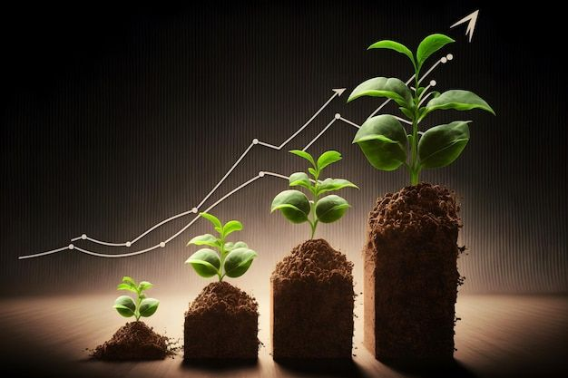

Tại sao chúng ta phải bảo vệ môi trường?
Môi trường là nền tảng của mọi sự sống trên trái đất. Vậy nên, bảo vệ môi trường là bảo vệ chúng ta và những thế hệ tương lai.
Dưới đây là những lí do chính:
- Bảo vệ sức khỏe:
- Ô nhiễm không khí có thể gây ra các bệnh về hô hấp như hen suyễn, viêm phổi, ung thư phổi.
- Nguồn nước bị ô nhiễm có thể dẫn đến các bệnh đường tiêu hóa, nhiễm độc kim loại nặng.
- Ô nhiễm đất ảnh hưởng đến thực phẩm, làm tăng nguy cơ ngộ độc và bệnh tật.
- Duy trì sự đa dạng sinh học:
- Rừng, biển và các hệ sinh thái tự nhiên là nơi sinh sống của nhiều loài động, thực vật.
- Phá hủy môi trường có thể dẫn đến tuyệt chủng của nhiều loài sinh vật, gây mất cân bằng sinh thái.
- Giảm thiểu biến đổi khí hậu:
- Hoạt động của con người như chặt phá rừng, sử dụng nhiên liệu hóa thạch làm gia tăng khí CO₂, gây hiệu ứng nhà kính và biến đổi khí hậu.
- Biến đổi khí hậu dẫn đến thiên tai, nước biển dâng, hạn hán và bão lụt.
Bảo vệ môi trường không chỉ là trách nhiệm của chính phủ mà của tất cả mọi người. Mỗi hành động nhỏ như trồng cây, tiết kiệm nước, giảm rác thải nhựa đều góp phần tạo nên sự thay đổi lớn cho hành tinh.
Vì vậy, hãy chung tay bảo vệ môi trường ngay từ bây giờ để bảo vệ chính chúng ta và tương lai của Trái Đất!
